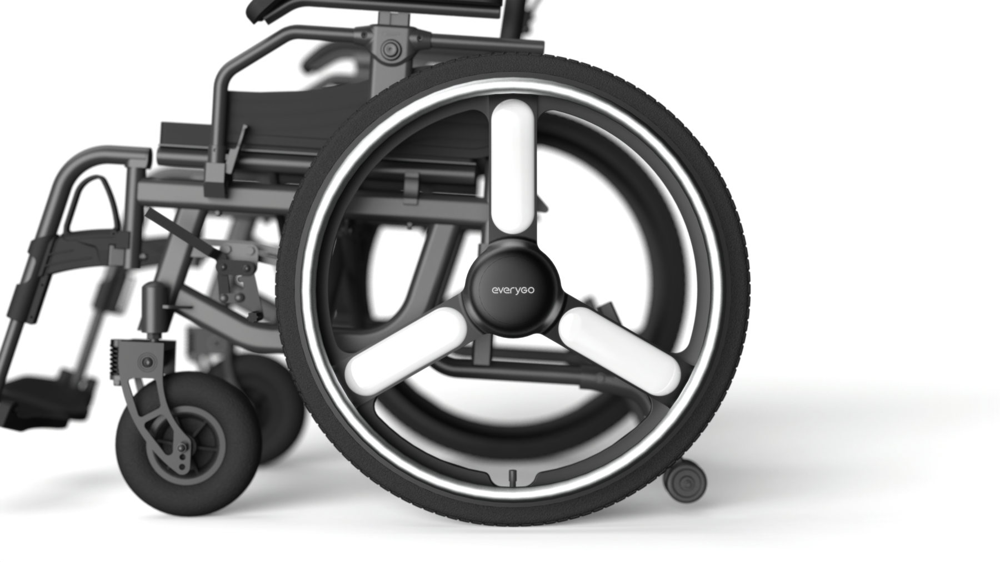
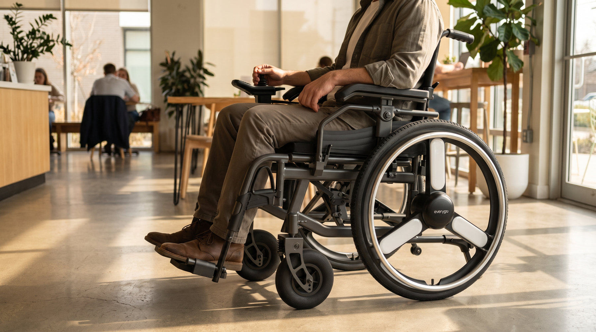
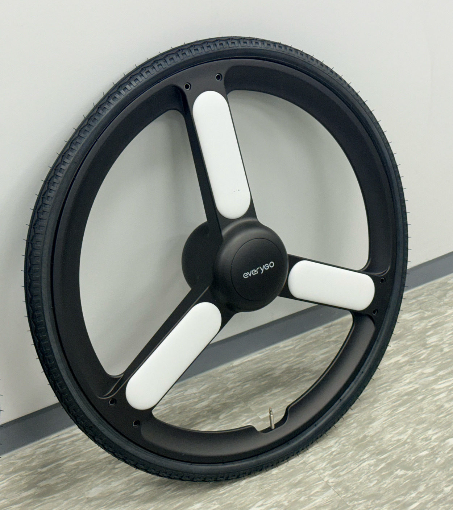
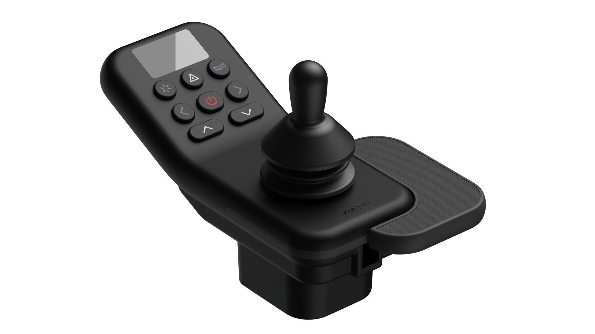
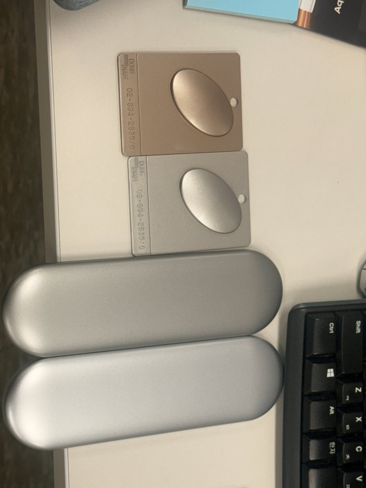
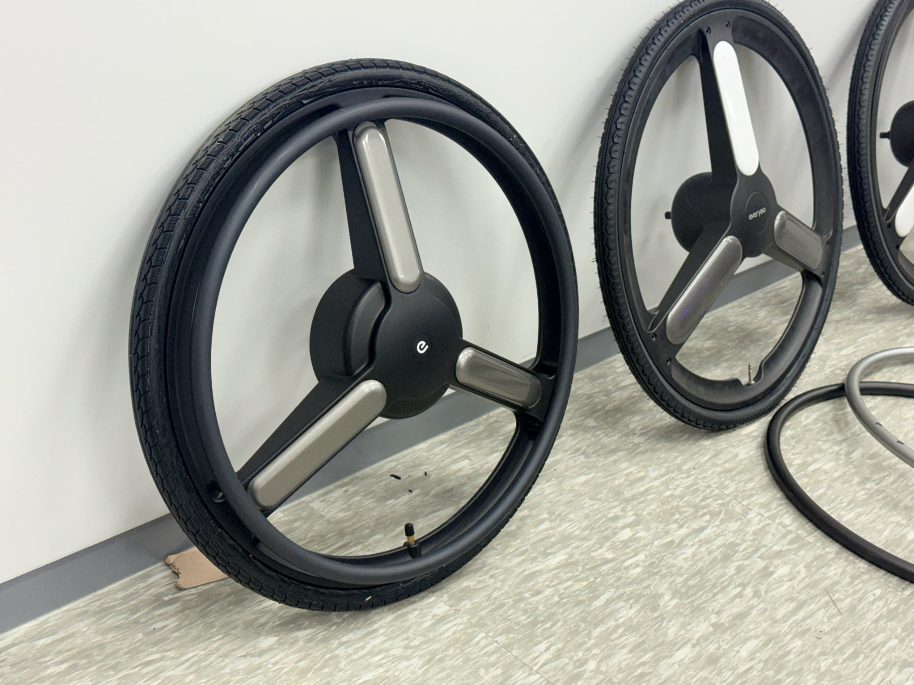
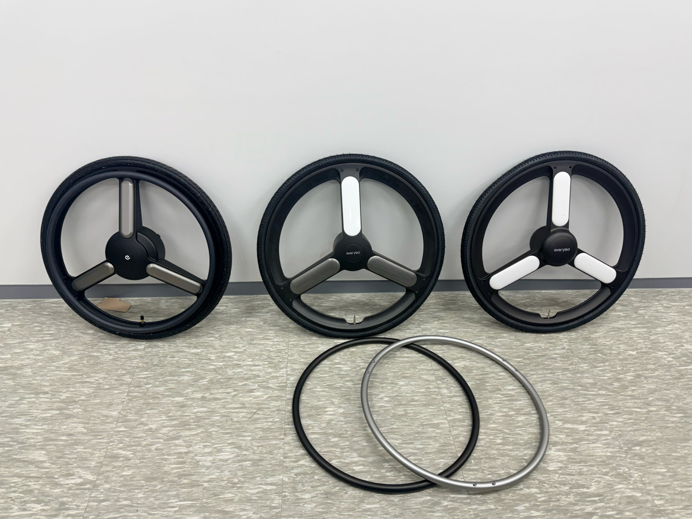

H500.
수전동휠체어 H500의 컨트롤러와 인휠모터 휠을 디자인했습니다.

- CTRL Controller 팜레스트 형상 · 버튼 배치 오조작 방지 · 표시부 가독성
- WHEEL In-wheel Motor Wheel 허브 일체형 구동부 3-스포크 · 컬러 커스텀
손 힘이 약해도 정확하게, 구동부는 휠 하나에
Precise control for a weak grip, a drive unit inside one wheel
컨트롤러는 기존 일자형 컨트롤러보다 가시성을 높이도록 디스플레이와 조작부의 각도를 세우고, 손 힘이 약한 사용자도 놓치지 않고 정확하게 조작할 수 있도록 손을 받친 채 쓰는 형태로 만들었습니다. 휠은 구동부를 휠 안에 담은 인휠모터 휠로, 휠체어 시장에도 컬러 선택 니즈가 있음을 확인하고 컬러 커스텀이 가능한 컨셉으로 진행했습니다.
Compared with conventional flat controllers, the display and controls are angled up for better visibility, and the controller is used with the hand resting on it so that users with a weak grip can operate it precisely. The wheel puts the drive unit inside the wheel itself; having confirmed that wheelchair users also want colour choice, it was developed as a colour-customisable concept.

기존 일자형 컨트롤러에서 가시성을 높일 수 있도록 디스플레이와 조작부의 각도를 세웠습니다. 탈착·좌우 반전이 가능한 팜레스트로 손을 받친 채 조작하고, 레드 전원 버튼을 중앙에, 방향 버튼을 주위에 모아 기능별로 묶었습니다.
The display and controls were angled up from the conventional flat layout for better visibility. A detachable, reversible palm rest supports the hand, and the red power button sits at the centre with the direction buttons grouped around it by function.



인휠모터를 허브에 담아 휠 하나로 구동부를 완결했습니다. 스포크 인서트는 원하는 컬러로 커스텀할 수 있도록 확장성을 고려했고, 손으로 수동 주행할 때를 고려해 핸드림의 두께와 휠과의 간격을 설정했습니다.
The in-wheel motor sits in the hub, so one wheel completes the drive unit. Spoke inserts were designed to be swapped for any colour, and the hand-rim thickness and its gap from the wheel were set for manual propulsion.


팜레스트는 탈착할 수 있고 좌우를 바꿔 달 수 있어 왼손잡이도 사용할 수 있습니다. 조이스틱은 기성품을 사용해 원가를 줄였습니다.
The palm rest detaches and can be mounted on either side, so left-handed users can use it too. An off-the-shelf joystick keeps the cost down.



Button Grouping
레드 전원 버튼을 중심으로 라이트·비상등·경적 버튼을 기능별로 묶었습니다.
Light, hazard and horn buttons are grouped by function around the central red power button.
Display
표시부를 버튼 위에 두어 누르는 손에 가려지지 않게 했습니다.
The display sits above the buttons so the pressing hand never hides it.
3D 프린팅 목업으로 직접 쥐고 조작하며 형상과 버튼 배치를 다듬었습니다.
3D-printed mock-ups were held and operated to refine the form and button layout.
수전동휠체어의 구동부를 휠 안에 담은 인휠모터 휠입니다. 3-스포크의 스포크 인서트를 원하는 컬러로 커스텀할 수 있도록 확장성을 고려해 디자인했습니다.
An in-wheel motor wheel that places the wheelchair's drive unit inside the wheel. The inserts of its three spokes were designed to be customised in any colour.

손으로 수동 주행할 때를 고려해 메탈 핸드림의 두께와 휠과의 간격을 설정했습니다.
The thickness of the metal hand rim and its gap from the wheel were set for manual propulsion.






스포크 인서트 컬러와 핸드림 블랙 / 실버 마감을 실물 목업으로 비교하고, 컬러칩 5종으로 최종 컬러를 확인했습니다.
Spoke-insert colours and black / silver hand-rim finishes were compared on physical mock-ups, and the final colours were checked against five colour chips.